The foundation stone for the world famous Sun Temple on
The foundation stone for the world famous Sun Temple on
The foundation stone for the world famous Sun Temple on
The foundation stone for the world famous Sun Temple on
The foundation stone for the world famous Sun Temple on
the banks of the river Chandrabhaga was laid in AD 1246.
the banks of the river Chandrabhaga was laid in AD 1246.
the banks of the river Chandrabhaga was laid in AD 1246.
the banks of the river Chandrabhaga was laid in AD 1246.
the banks of the river Chandrabhaga was laid in AD 1246.
Different kinds of stones were brought from distant
Different kinds of stones were brought from distant
Different kinds of stones were brought from distant
Different kinds of stones were brought from distant
Different kinds of stones were brought from distant
mountains. White, black and blue stones were brought from
mountains. White, black and blue stones were brought from
mountains. White, black and blue stones were brought from
mountains. White, black and blue stones were brought from
mountains. White, black and blue stones were brought from
the Nilgiris and distant Kingdoms… Stones 25 feet high
the Nilgiris and distant Kingdoms… Stones 25 feet high
the Nilgiris and distant Kingdoms… Stones 25 feet high
the Nilgiris and distant Kingdoms… Stones 25 feet high
the Nilgiris and distant Kingdoms… Stones 25 feet high
and weighing 56000 maunds, intended for the temple dome
and weighing 56000 maunds, intended for the temple dome
and weighing 56000 maunds, intended for the temple dome
and weighing 56000 maunds, intended for the temple dome
and weighing 56000 maunds, intended for the temple dome
were transported from over 100 miles through water ways
were transported from over 100 miles through water ways
were transported from over 100 miles through water ways
were transported from over 100 miles through water ways
were transported from over 100 miles through water ways
and were installed at the top of the temple at a height of
and were installed at the top of the temple at a height of
and were installed at the top of the temple at a height of
and were installed at the top of the temple at a height of
and were installed at the top of the temple at a height of
200 feet... 1200 sculptors gave up their comforts and desires
200 feet... 1200 sculptors gave up their comforts and desires
200 feet... 1200 sculptors gave up their comforts and desires
200 feet... 1200 sculptors gave up their comforts and desires
200 feet... 1200 sculptors gave up their comforts and desires
and took a vow: '' We will not go back till the dome of
and took a vow: '' We will not go back till the dome of
and took a vow: '' We will not go back till the dome of
and took a vow: '' We will not go back till the dome of
and took a vow: '' We will not go back till the dome of
konark is fixed'' .... They worked tirelessly for 12 years.
konark is fixed'' .... They worked tirelessly for 12 years.
konark is fixed'' .... They worked tirelessly for 12 years.
konark is fixed'' .... They worked tirelessly for 12 years.
konark is fixed'' .... They worked tirelessly for 12 years.
Medieval India: Art and Literature
Page 7
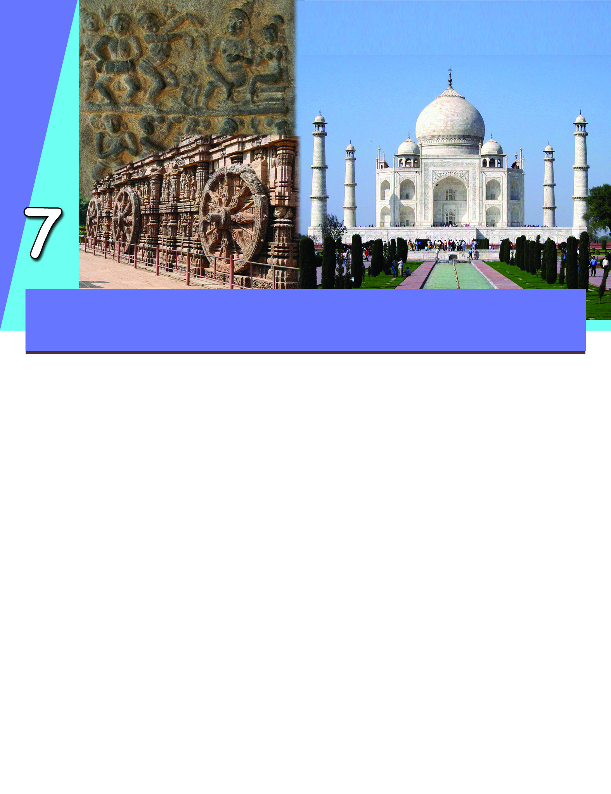
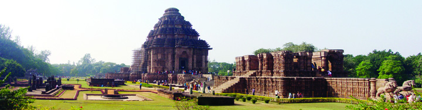
Page 8

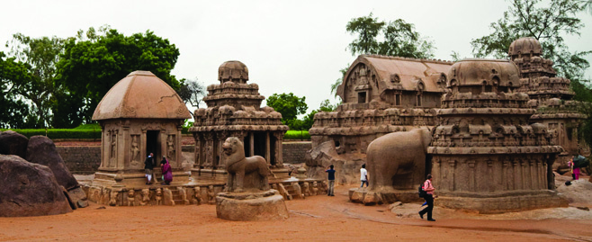

Social Science
Medieval World
104
Each temple here is carved out of a single rock. Such
rock cut temples were built in several parts of India. The cave
temples at Ellora in Maharashtra were built in this style. They
were built during the period between 6th and the 12th century
Pancharathas in Mahabalipuram
The description given above is an extract from the novel
Shilapadmam, written by Pratibha Ray, the famous Odiya
novelist.
What information can you gather from it?
Stones of different colours were brought from different
parts of India for the construction of the temple.
Besides the temple at Konark, several other structures were
constructed in medieval India. Shall we take a look at these
structures and their features?
The Pallavas were the rulers based at Kanchipuram in South
India. Mahabalipuram was their major port city. The temples
constructed in Mahabalipuram during the reign of the Pallava
king Narasimhavarman, are known as Pancharathas.
Page 9

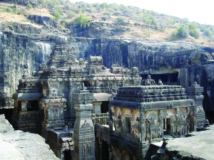
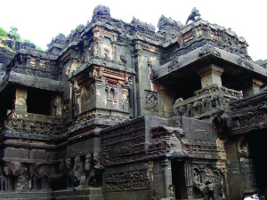
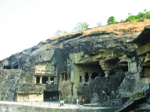
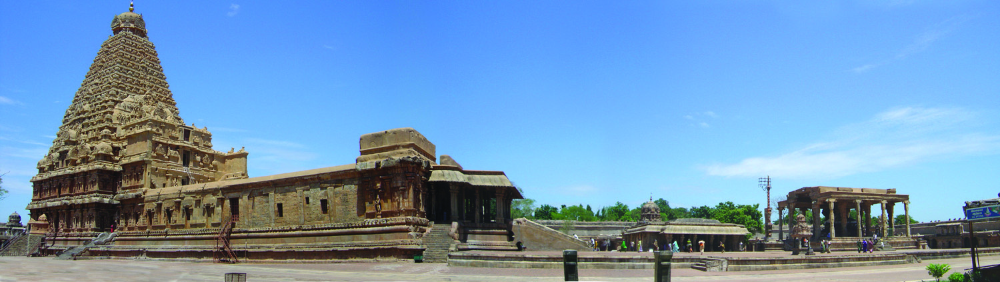
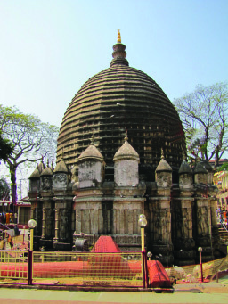
Standard VI
Medieval World
105
CE. The temples of Buddhists, Jains, Vaishnavites, and Shaivites
can be found here.
In the period that followed, a new style of temple architecture
came into being. In this style, tall temples were constructed using
chiselled rocks. Most of these temples were multi-storeyed.
The Brihadiswara Temple in Tanjavoor, constructed during the
reign of Rajaraja Chola and the Kamakhya Temple in Assam
epitomise this style.
Later, the style of adorning temple walls with sculptures became
prevalent.
Excerpts from the Ramayana, the Mahabharata, and the Bhagavata
were carved on the stone walls of the temples. In addition, the
sculptures depicting scenes of war and art forms like dance and
musical concerts also found a place on temple walls.
Cave temples at Ellora
Kamakhya Temple in
Assam
Brihadiswara Temple in Tanjavoor
Page 10

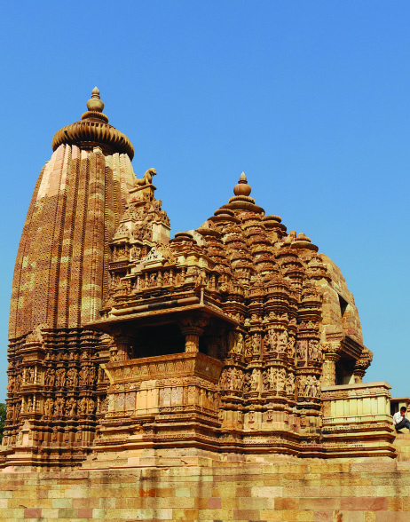
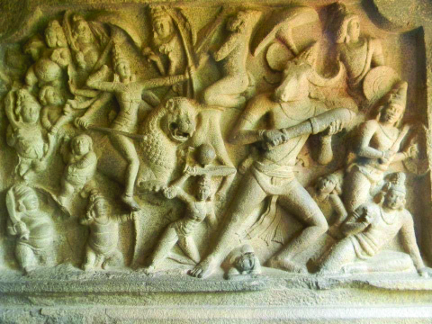
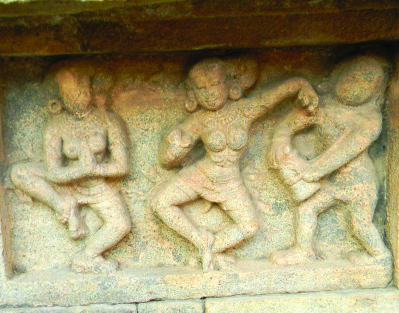
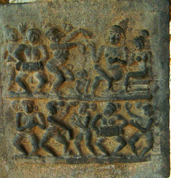
Social Science
Medieval World
106
The Khajuraho Temple in Madhya Pradesh is an example of the
style of adorning temple walls with sculptures.
The contemporary style of temple architecture in India
has developed through different stages. Substantiate.
Music
War
Dance
Khajuraho Temple in Madhya Pradesh
Page 11

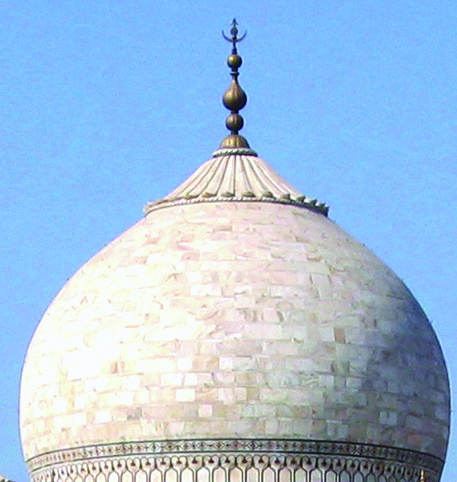
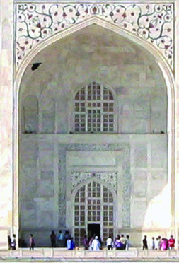
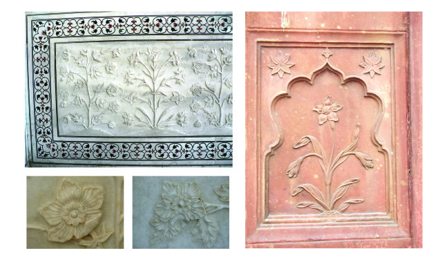
Standard VI
Medieval World
107
A new style of architecture developed during the Sultanate
period. It is known as the Indo-Islamic style of architecture.
Skilled architects from Turkey and Persia were brought to India
for the construction of different structers. The indigenous
sculptors, labourers, and masons also joined them. The Indo-
Islamic style evolved out of the amalgamation of the styles of
both the groups. Let's examine the major features of this style.
Arches, domes, and minarets were the notable features of
this style
Figures of flowers and plants were carved for decorating
buildings.
Iam\w
Arch
Dome
Minaret
Figures of plants and flowers used for decorating buildings
Page 12


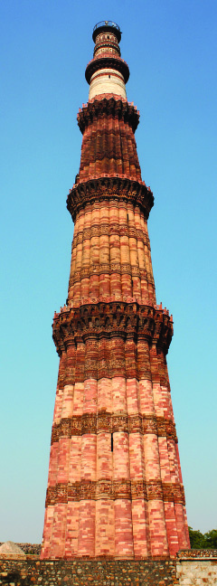
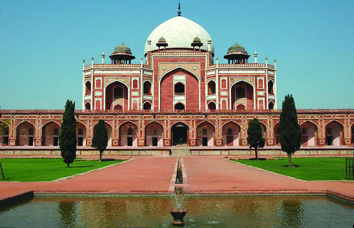
Social Science
Medieval World
108
Mortar, red sandstones, and marbles were used for
construction.
Spacious gardens were set on the building premises.
The Qutab Minar was the first building constructed in this style.
The construction of the Qutab Minar was started during the reign
of Qutb ud din Aibak, the founder of the Sultanate. Later,
Iltutmish completed the construction. A tall tower and balconies
projecting from it are the striking features of this building.
The Indo-Islamic style became popular during the Mughal period.
The Mughal kings constructed several forts, mosques, and tombs
in this style.
Let's have a look at a few of these constructions.
Humayun's Tomb in Delhi is an epitome of this style. It is situated
at the centre of a beautiful garden. This tomb is made of red
sandstone and marble. The Taj Mahal was constructed in the
style and form of this monument.
Qutab Minar
Humayun's Tomb - Delhi
Page 13

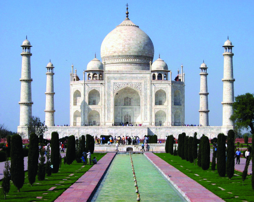
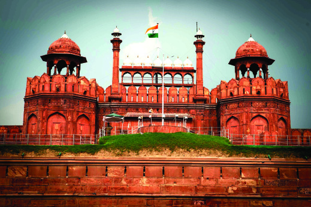
Standard VI
Medieval World
109
The Taj Mahal in Agra, constructed by Shah Jahan in memory of
his wife Mumtaz Mahal, is the best example of Indo-Islamic
style of architecture. White marble was used for its construction.
Taj Mahal
Here is the picture of the Red Fort in Delhi. Why is it
named so?
This is the most important fort built during the Mughal period.
The fort is made entirely of red sandstone.
Another building constructed in this style is the Jama Masjid in
Delhi. Marble and red sandstone were used for its construction.
Red Fort
KT 631-2/Soc. Science 6 (E) Vol-2
Page 14


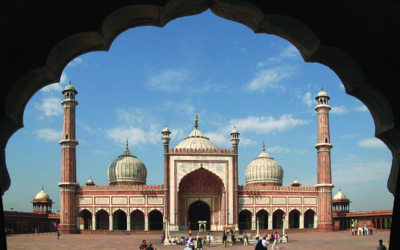
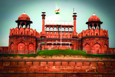
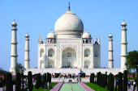
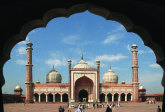
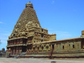
Social Science
Medieval World
110
Collect information on the major structures constructed in
medieval India and complete the following table.
Jama Masjid - Delhi
Structure
Name
Features
Brihadiswara
Temple
$ Situated in Tanjavoor in Tamil Nadu.
$ Constructed by Rajaraja, the Chola king.
$ One of the spacious and tall temples in India.
$ Multi storeyed temple made of chiselled stones.
$
$
$
$
$
$
$
$
$
$
$
$
The Gol Gumbaz in Bijapur, constructed during the reign of the
Bahmani Sulthans and the Char Minar in Hyderabad, constructed
during the reign of the Qutb Shahi Sulthans, are also examples
of Indo-Islamic style of architecture.
Page 15


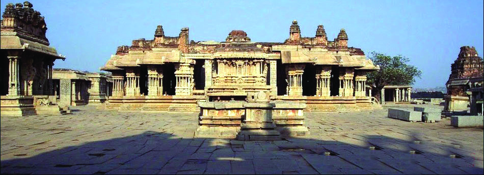
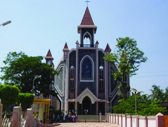

Standard VI
Medieval World
111
Vitthala Swami Temple and Hazara Rama Temple are the
important temples built during the medieval period by the
Vijayanagara kings of South India. Let us see how these
structures are different from the earlier ones.
Identify the common features of the Indo-Islamic style
of architecture and prepare a note.
Vitthala Swami Temple
St. Francis Church in Kochi
They are multi-storeyed and built of chiselled rocks.
Mandapas were built adjacent to the temples.
Pillars with carvings were constructed.
Temples were expanded.
During the 16th century, the Portuguese
introduced a new style of architecture in India.
It is known as the Gothic style. Pointed towers
and arches are the major features of this style.
the St. Francis Church in Kochi and the Bom
Jesus Church in Goa are examples of this
style.
The buildings constructed in the styles of
architecture discussed above are the symbols
of the rich and diverse cultural tradition of
India.
Page 16

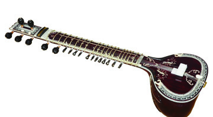
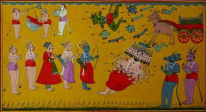
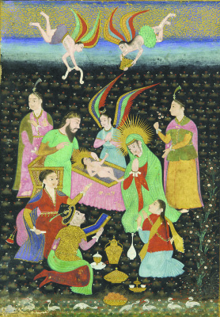
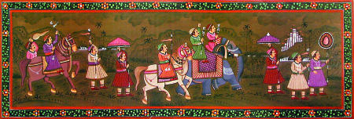
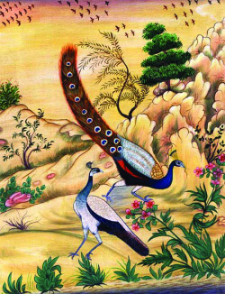
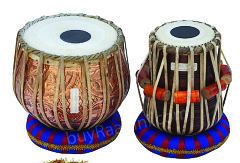
Social Science
Medieval World
112
Music and Painting
Apart from architecture, music also flourished during the
medieval period. Carnatic music flourished in South India.
Purandaradasa was the famous Carnatic musician of the age.
During the Sultanate - Mughal period, the influence of Persian
music gave birth to a new style of music. It is known as
Hindustani music. Amir Khusrau, Tansen, etc. were the
famous musicians of the period. Qawwali, a form of music,
developed back then. Amir Khusaru played a major role in its
development. Many new musical instruments evolved during
this period. Tabala and sitar
are examples of such
instruments.
Several remarkable changes
were apparent in the field of
painting too.
Observe the pictures below.
Mughal painting -
An instance from the Bible
Mughal painting -
Instances from the Ramayana
Mughal painting - Depiction of royal ife
Mughal painting -
Scenes from nature
Tabala
Sitar
Qawwali is a form of music
evolved in Khanqah where Sufi
saints resided. The spiritual songs
composed in Urdu are sung in tune
to the fast rhythm of different
musical instruments.
Qawwali
Page 17


Standard VI
Medieval World
113
What were the themes adopted for painting during that period?
The major themes were from the Ramayana, the Bible, royal
life, and nature.
Literature
In addition to the progress in
the fields of architecture,
music, and painting, literature
also gained much advancement
in medieval India The Bhakti
and Sufi movements which
originated during the medieval
period played a major role in the
progress of literature.
The
Bhakti
Movement
strengthened the vernaculars.
The poets of the Bhakti Movement wrote in the language of the
common people. It stimulated the development of the following
regional languages:
Malayalam
Telugu
Kannada
Marathi
Hindi
Bengali
Gujarathi
The Bhakti Movement formed in South India was
based on deep love and devotion towards God. The
Alvars and the Nayanars were the two streams of
the Bhakti Movement. The Alvars are Vaishnavites
and the Nayanars are Shaivites. The ideals of this
movement spread to North India by the 14th century.
Guru Nanak, Kabirdas, Tulsidas, Surdas, Tukaram,
Mirabai, and Chaitanya were the main propagators
of the Bhakti Movement in North India.
Bhakti Movement
The Sufis rejected luxurious life
and gave importance to spiritual
life. The term Sufism was derived
from the Arabic word Suf.
Khwaja Muinuddin Chishti,
Nizamuddin Auliya, etc. were the
propagators of Sufism.
Sufi Movement
Page 18


Social Science
Medieval World
114
The names of some major literary works in regional languages
and their authors are given below.
Hindi
Ramacharitamanas -
Tulsidas
Malayalam
Adhyatma
Ramayanam -
Ezhuthachan
Tamil
Iramavatharam
(Kamba Ramayanam)-
Kambar
Telugu
Mahabharata-
Nannayya
Kannada
Vikramarjuna
vijayam (Pamba
bharatam) -
Pamba
Odiya
Odiya
Mahabharatam-
Sarala Dasa
Gujarathi
Gujarathi Bhagavatam-
Premananda
Marathi
Marathi Bhagavatam-
Eknath
Bengali
Bengali Ramayanam-
Kritivasa
Regional
languages and
literary works
Collect information on the literary works in regional languages
and the respective authors from the given chart and complete
the table given below.
Page 19

Standard VI
Medieval World
115
The Sufi Movement played a major role in the development of
the Urdu language. Urdu was formed by the hybridization of
Arabic, Persian and the Indian languages, Hindi and Sanskrit.
Several books were translated into Persian during the medieval
period. A department exclusively for translation functioned
during the reign of the Mughal emperor Akbar. Many Sanskrit
texts including the Ramayana and the Mahabharata were translated
into Persian during that period. It was Dara Shukoh, the son of
Shah Jahan, who translated the Upanishads and the Atharva Veda
into Persian. The translations played a major role in spreading
the knowledge and culture of India to other parts of the world. It
led to the cultural exchange with the rest of the world.
Regional languages
Works
Authors
Page 20


Social Science
Medieval World
116
hgnb
Indian architecture developed through different periods.
The influence of different styles of architecture is apparent
in the structures of medieval India.
Indian music and painting developed as a result of the
mixing of different styles over the ages.
The Bhakti and Sufi movements contributed to the progress
of literature and the development of regional languages.
The learner
explains the features of different styles of medieval Indian
architecture.
analyzes the features of the Indo-Islamic style of
architecture.
analyzes the changes brought about in the fields of music
and painting in medieval India.
Medieval India - Art and Literature
Sultanate-Mughal
Architecture
Painting
Music
Styles of
temple
architecture
Literature
Indo-Islamic style of
architecture.
Page 21


Standard VI
Medieval World
117
Structures
Period
Brihadiswara Temple
Chola Period
Qutab Minar
.........................................
Humayun's Tomb
.........................................
Taj Mahal
.........................................
Red Fort
.........................................
evaluates the role of the Bhakti and Sufi movements in the
growth and development of literature and regional
languages in medieval India.
Find out the features of the Indo-Islamic style of
architecture.
Complete the table of structures and their corresponding
periods of construction.
Collect the historical and interesting information related
to different constructions in India.
Collect pictures of the propagators of the Bhakti-Sufi
movements and prepare an album with captions.
Prepare a list of the propagators of the Bhakti movement
and the current names of the Indian states where they
functioned.
Prepare a wall magazine using the pictures related to
Mughal paintings.
Page 22
Social Science
Medieval World
118
Completely
Partially
Need
improvement
Can identify that the Indian architecture
developed through different periods.
Can explain the features of the Indo-
Islamic style of architecture.
Can evaluate the growth and
development of architecture, music, and
painting in medieval India.
Can recognize that the medieval
structures are the cultural symbols of
India.
Can analyse the influence of the Bhakti-
Sufi movements on the Indian culture.
Self assessment
Self assessment
Self assessment
Self assessment
Self assessment